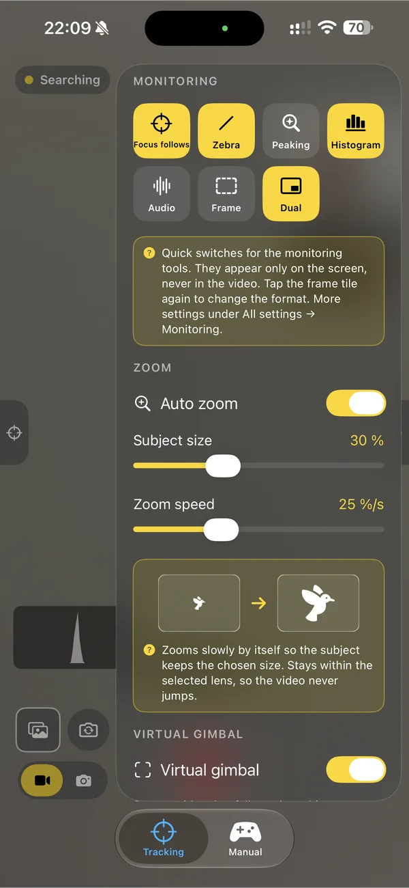

Foto dan pemicu
Jepretan tunggal, seri interval, dan jepret otomatis pada saat yang tepat.


Dalam mode foto, panel kanan di bawah Pemicu foto mengatur cara Keepsight memotret.
| Jenis | Yang terjadi |
|---|---|
| Tunggal | Satu foto setiap kali rana ditekan. |
| Interval | Seri pada interval tetap sampai jumlah maksimum tercapai. |
| Senyum (Pro) | Memotret saat semua wajah di gambar tersenyum dengan mata terbuka. |
| Pandangan (Pro) | Memotret saat semua orang menghadap kamera. |
| Subjek (Pro) | Memotret saat subjek yang dipilih terkunci dan cukup besar dalam bingkai. |
Jepretan tunggal dan interval termasuk dalam versi gratis. Tiga jenis otomatis memerlukan Keepsight Pro; di versi gratis ketiganya menampilkan gembok.
Menjalankan seri
- Pilih jenis pemicu.
- Atur Interval dan Jumlah foto maksimum.
- Tekan rana. Dengan jenis otomatis, Keepsight kini siaga dan menunggu momennya.
- Tampilan di tengah atas ikut menghitung, misalnya “3 / 30”. Menekan rana sekali lagi mengakhiri seri.
- Interval: 1 hingga 30 detik. Pada jenis otomatis, ini jeda minimum antara dua foto.
- Foto maksimum: 2 hingga 100.
Untuk burung dan hewan lain, “Subjek” dengan interval pendek bekerja baik: Keepsight memotret begitu hewan tampak besar dalam bingkai dan terus memotret selama ia tetap di sana. Aplikasi tidak mendeteksi ke mana hewan melihat.
Foto 48 MP dan ProRAW lebih lama disimpan. Karena itu dengan interval sangat pendek, jeda sebenarnya bisa lebih panjang.